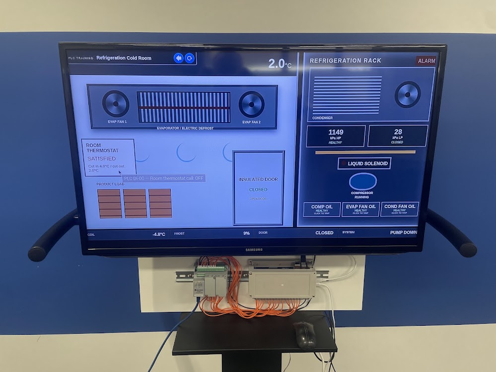
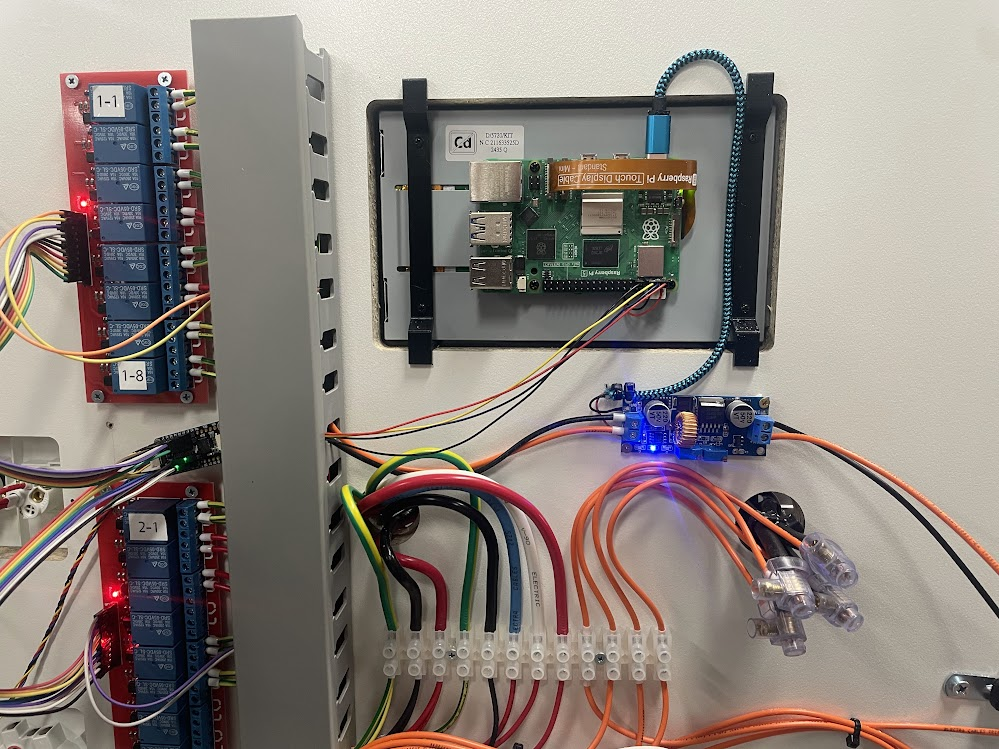

Electrotechnology
Practical apprentice training in mandatory electrical testing, safe isolation and systematic fault finding.
Capability
Teaching in electrotechnology, plus specialist subjects including engineering electronics, home automation, drone technology and electronic security.
Practical apprentice training in mandatory electrical testing, safe isolation and systematic fault finding.

Real PLC programming and commissioning practice using simulated industrial plant and repeatable fault conditions.

Applied electronics, relay interfacing, embedded controllers and communication between software and physical devices.
Examples from these specialist subjects will be added here.